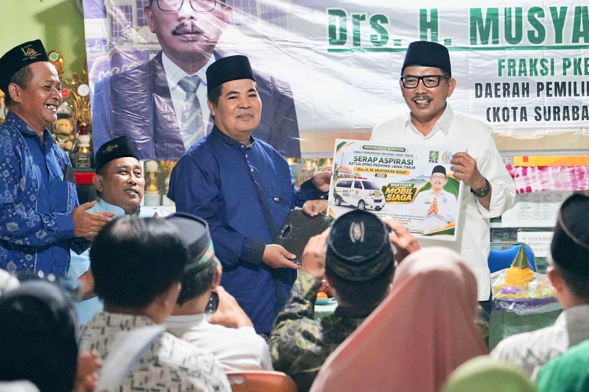

Keresahan masyarakat terkait minimnya akses penanganan darurat medis dan kelayakan infrastruktur pendidikan akhirnya mendapatkan solusi konkret. Ketua Dewan Perwakilan Rakyat Daerah (DPRD) Provinsi Jawa Timur, Drs. H. M. Musyafak Rouf atau yang akrab disapa Abah Syafak, turun tangan secara langsung memfasilitasi pengadaan 26 unit mobil siaga. Selain armada transportasi darurat tersebut, tokoh legislatif ini juga mengawal penyaluran bantuan hibah pendidikan yang diperuntukkan bagi perbaikan fasilitas belajar masyarakat, khususnya Taman Pendidikan Al-Qur'an (TPQ) dan pondok pesantren. Langkah proaktif ini dilakukan bersama ratusan warga setempat yang selama ini menantikan jaminan pelayanan dasar yang memadai dari pemerintah daerah.
Realisasi penyerapan aspirasi masyarakat ini dilaksanakan melalui sebuah pertemuan tatap muka yang digelar di Kelurahan Wiyung, Kota Surabaya, pada hari Minggu, 15 November 2026. Dalam agenda penjaringan aspirasi tersebut, sebanyak 125 orang warga dari berbagai lapisan masyarakat di wilayah Wiyung hadir untuk berpartisipasi aktif. Ruang dialog interaktif ini berlangsung intensif selama satu setengah jam penuh, memberikan kesempatan emas bagi warga untuk bertatap muka secara langsung dengan wakil rakyat mereka di tingkat provinsi guna membahas persoalan-persoalan paling krusial di lingkungan tempat tinggalnya.
Program jemput bola ini sengaja dirancang sebagai upaya strategis untuk memangkas jalur birokrasi pemerintahan yang kerap dinilai terlalu panjang dan menyulitkan warga di tingkat rukun warga. Dengan metode dialog tanpa perantara, masyarakat dapat menyampaikan keluhan terkait kebutuhan transportasi medis dan perbaikan sarana belajar secara terbuka. Usulan-usulan prioritas yang disepakati dalam forum tersebut tidak hanya sekadar didengar, tetapi langsung diproses secara administratif oleh tim internal DPRD Jawa Timur. Seluruh data konkret hasil rembuk warga ini kemudian diinput secara presisi ke dalam Sistem ASPIRA, sebuah platform pelaporan terpadu yang memastikan setiap aspirasi masyarakat terekam dengan akurat untuk ditindaklanjuti.

Ketua DPRD Jawa Timur menegaskan bahwa turun ke bawah dan mendengarkan keluh kesah masyarakat merupakan kewajiban mutlak bagi seorang wakil rakyat. "Mobil siaga ini bukan sekadar kendaraan, melainkan jaminan bahwa ketika ada warga Wiyung yang sakit di tengah malam, ada solusi transportasi yang siap sedia," ujar Drs. M. Musyafak. Lebih lanjut, ia juga memberikan perhatian khusus pada kelayakan sektor pendidikan anak-anak di akar rumput. "Masa depan generasi kita ada di ruang-ruang kelas, di TPQ, dan di pondok pesantren. Kami berkomitmen menyalurkan hibah agar anak-anak kita bisa belajar tanpa atap yang bocor atau fasilitas yang minim. Dialog tanpa perantara hari ini membuktikan bahwa solusi nyata bisa dihadirkan jika kita mau duduk bersama dan mendengar," tegasnya.
Sebagai informasi tambahan, mekanisme kerja DPRD dalam merealisasikan program-program kerakyatan ini tidak dilakukan melalui eksekusi fisik secara langsung di lapangan, melainkan bertumpu pada kewenangan konstitusional fungsi penganggaran (budgeting) dan pengawasan (controlling). Usulan warga Wiyung yang telah masuk ke dalam Sistem ASPIRA tersebut dipetakan terlebih dahulu menjadi dokumen perencanaan resmi yang terintegrasi. Dokumen permohonan inilah yang nantinya akan menjadi instrumen atau bahan pembahasan utama saat tahapan penajaman alokasi Anggaran Pendapatan dan Belanja Daerah (APBD), lengkap dengan rincian tujuan penggunaan dan besaran nominal yang diajukan. Melalui siklus legislasi yang terukur ini, alokasi dana untuk pelayanan sosial dan pendidikan dapat dieksekusi oleh pemerintah provinsi dengan sasaran yang tepat dan akuntabel.